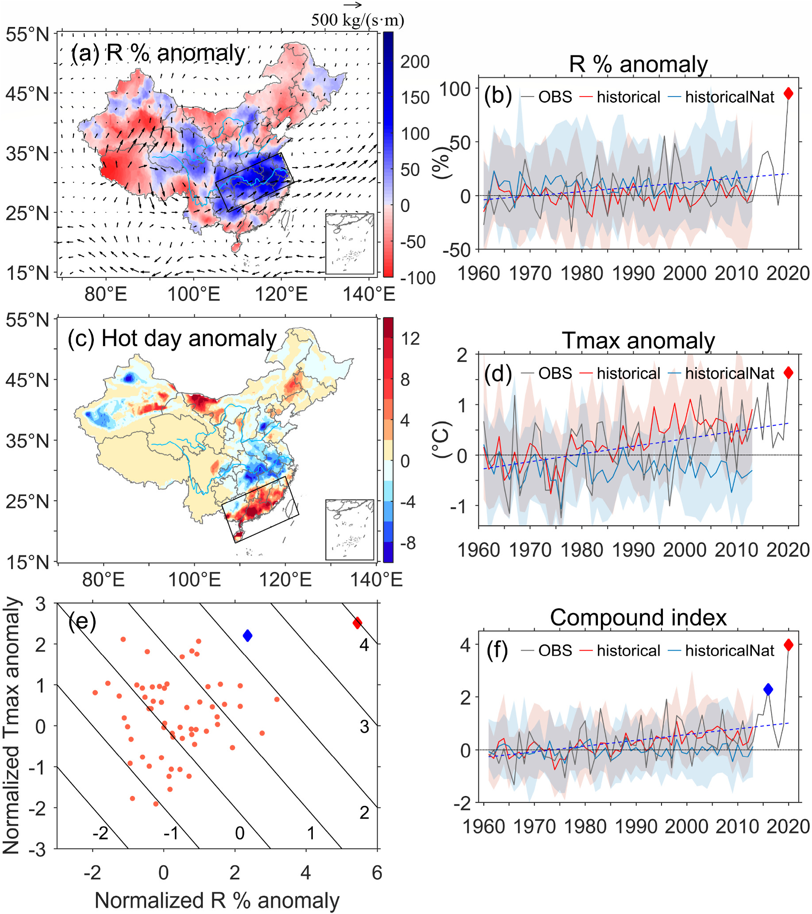
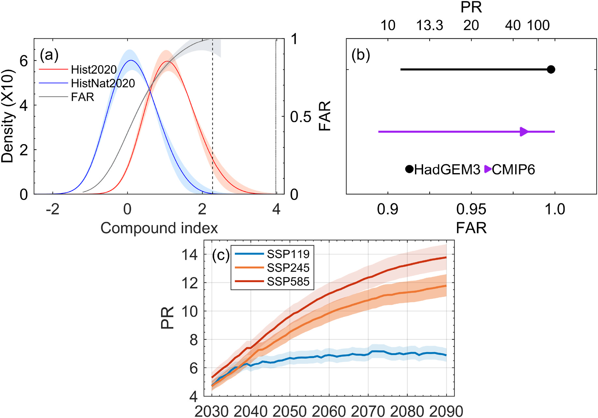
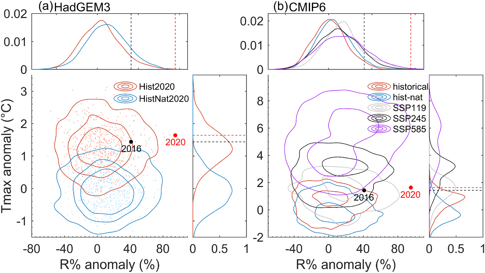

Research Highlights · Spatially compound event attribution
When heavy rain meets heat: attributing a compound event across regions
Overview
This study treats the record-breaking 2020 Meiyu rainfall along the middle and lower Yangtze River and concurrent heat in South China as one spatially compound event. We developed a combined storyline–probability attribution framework and a constructed flow analogue method. Large-scale circulation and the thermodynamic effects of human influence contributed about 51% and 39% of the event’s intensity, respectively. Compared with a climate without human influence, anthropogenic climate change made similar compound events at least about 10 times as likely.
How much more common these events become depends strongly on the emissions pathway. Relative to the 2001–2020 climate, their probability reaches about 10 times the baseline around mid-century and 14 times toward the end of the century under high emissions. Under low emissions, both periods remain around 7 times the baseline, substantially below the high-emissions projections.
Background
The study returns to the unusual summer of 2020 in China, when record-breaking Meiyu rainfall and severe flooding along the middle and lower Yangtze River coincided with record-breaking heat and widespread drought in South China. Neighboring regions faced different extremes: rain flooded farmland and damaged harvests, while heat disrupted crop growth farther south, with effects that could accumulate across wider food-supply and economic systems.
Considered together, the events fit the idea of a spatially compound event: connected regions experience the same or different weather extremes at the same time, and their impacts reach a shared system. Alongside studying rainfall and heat separately, we wanted to understand the combined event’s intensity and how climate change had affected it.
Most earlier attribution studies focused on a single variable or hazard, so finding an index that captured different extremes across regions and also worked in model simulations was a challenge. We were particularly interested in findings that human influence had reduced the probability of the 2020 Yangtze rainfall event on its own. Would including the concurrent South China heat change the conclusion?
Methods
To put rainfall and heat on a common scale, we divided the June–July rainfall percentage anomaly in the middle and lower Yangtze region and the concurrent maximum-temperature anomaly in South China by their respective climatological standard deviations, then averaged them. The resulting compound index gives the two standardized anomalies equal weight, allowing us to compare the combined magnitude of different rainfall–temperature combinations.
Estimating the circulation contribution brought another challenge: traditional flow analogues select the closest historical weather patterns, but the more unusual the event, the harder it is to find a good match. We therefore developed constructed flow analogues (CFA), combining several historical analogues with weights chosen to reconstruct circulation close to the observed 2020 pattern, then using the same weights to reconstruct rainfall and temperature.
The attribution analysis follows two perspectives. The storyline approach holds circulation close to the observed event to estimate the contributions of circulation itself and the thermodynamic effects of human influence. The probability-based approach leaves circulation unconstrained and compares the intensity of equally rare events and the likelihood of exceeding a specified intensity. We used the UK Met Office’s HadGEM3 large ensembles and CMIP6 simulations that passed model evaluation to compare the estimates across methods and models.
Results
In 2020, rainfall in the middle and lower Yangtze region reached about 5.4σ and South China heat about 2.5σ, where σ is each variable’s climatological standard deviation. Their average gave a compound index of about 4, the highest since 1961, against a significant upward trend in the index over 1961–2020.

The CFA reconstruction estimated a dynamic contribution of about 51% to the compound event’s intensity, with circulation explaining about 56% of the rainfall anomaly and 41% of the heat anomaly. The frequency of similar circulation patterns showed no clear increase over 1961–2019, indicating that the unusual configuration in 2020 was mainly associated with internal climate variability.
After bringing the circulation in the HadGEM3 ensembles close to the observed 2020 pattern, we compared simulations with and without human influence and estimated a thermodynamic contribution of about 39% to the compound event’s intensity. A similar weather pattern in a warmer climate affected by human activities can produce different rainfall and temperatures, strengthening the combined event.
With circulation unconstrained, we compared events with the same return period, meaning events that were equally rare. The overall human contribution was about 37% in HadGEM3 and 35% in the CMIP6 ensemble, close to the storyline estimate of 39%. Together, these estimates suggest that the thermodynamic background was the main source of human influence in this case, with a relatively small additional contribution through changes in circulation frequency.
Separating the forcings showed greenhouse gases and aerosols acting in opposite directions: greenhouse gases contributed about +70% to the compound event’s intensity, while anthropogenic aerosols contributed about −30%. Aerosols offset part of the greenhouse-gas enhancement, shaping the net change.

To estimate the occurrence probability of similar events, we used the previous record, set in 2016, as the threshold, calling events that reached or exceeded this compound-index value “2020-like.” The observed 2020 value was exceptionally rare even in present-climate model simulations, so using the previous record also reduced the selection bias from choosing the most extreme observed year as the threshold.
At this threshold, the best-estimate probability ratio was about 442 in HadGEM3 and 53 in the CMIP6 ensemble. The rarity of the events leaves substantial uncertainty in the upper bounds, while the lower uncertainty bounds from both model systems are close to 10. The paper therefore summarized the finding as human influence making these events at least about 10 times as likely.
Future changes were estimated in 20-year moving windows relative to the 2001–2020 climate. Under the high-emissions SSP5-8.5 scenario, similar events are projected to be about 10 times as likely around 2050 and 14 times as likely around 2090. Under the low-emissions SSP1-1.9 pathway, consistent with the 1.5°C goal, both periods reach about 7 times the baseline. The growing gap between the pathways shows how emissions reductions can limit further increases.

The separate rainfall and temperature distributions help explain the increase in compound-event probability. In the present-climate simulations, rainfall was lower with human influence than without it, possibly because aerosol suppression outweighed the enhancement from greenhouse gases at this stage. Temperature increased clearly with human influence, making the heat component the main driver of the higher compound-event probability.
Although future rainfall shifts toward higher values, the observed 2020 rainfall anomaly remains very extreme even by the end of the century under SSP5-8.5. In contrast, the temperature anomaly observed in 2020 falls within a relatively ordinary range under SSP2-4.5 and SSP5-8.5. Reaching the same compound index in the future would therefore no longer require the heat component to be as unusual as it is today.

Discussion
Human influence can reduce the probability of the Yangtze rainfall event considered alone, yet make the compound event much more likely when South China heat is included. That difference is precisely why compound events deserve their own analysis: climate change affects different hazards by different amounts and sometimes in opposite directions. A stronger change in heat can outweigh a reduction in rainfall, making the combined index more likely to reach extreme values.
The agricultural effects of flooding and heat in neighboring regions can also spread through food-supply and economic connections, creating pressures across China. Combining weather-event attribution with information on exposure, vulnerability, and observed impacts would help us understand the social losses caused by these concurrent anomalies.
From attributing the Meiyu rainfall and South China heat separately, through combining storyline and probability-based analyses for southwestern China’s heavy rainfall, to this spatially compound event, we have gradually connected the causes of individual events with changes in the likelihood of similar events. CFA brings reconstructed circulation closer to the observed weather, while the storyline and probability-based approaches examine human influence from different angles. A next step is to follow how hazards in different regions jointly affect wider social systems.
Behind the scenes
This was the first study I completed after returning to the institute. I initially used copulas to describe the two variables’ joint distribution and carried out a lot of analysis, but the work did not progress smoothly. With guidance from Dr. Emanuele Bevacqua and Prof. Jakob Zscheischler at the Helmholtz Centre for Environmental Research in Germany, we decided to define the event using a simpler compound index that would also be easier to reproduce.
Working with CMIP6 multi-model data for the first time gave me valuable experience processing large datasets on servers, and this project became the starting point for my research into compound events.